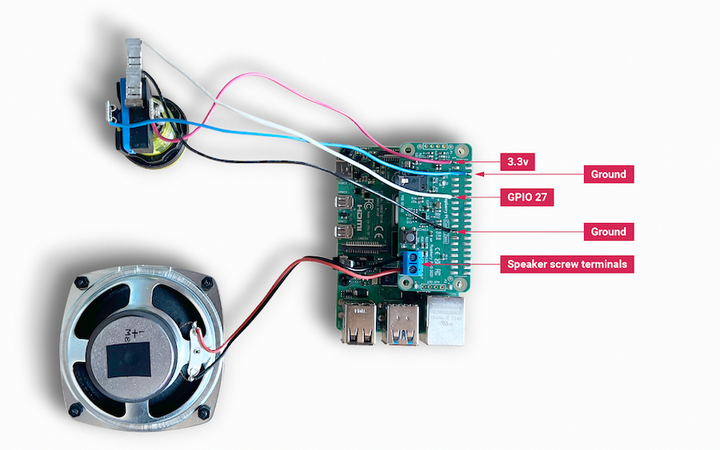

For this project, any small passive speaker is probably sufficient. We're using one available here, which handles 5 W of power at 4 Ω. We have also used an illuminated momentary push button, and a laser-cut box to house all the components; but both are entirely optional. This example will work just using the Codec Zero's on-board button, which is pre-wired to GPIO 27. (Alternatively, you can use any momentary push button, such as those available here.)

Use a small flat-head screwdriver to attach your speaker to the screw terminals. For the additional push button, solder the button wires directly to the Codec Zero pads as indicated, using GPIO pin 27 and Ground for the switch, and +3.3V and Ground for the LED, if necessary.